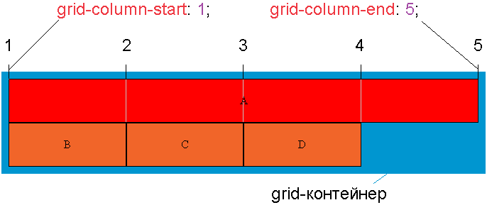

Свойство grid-column-end — определяет, на какой вертикальной линии будет закачинаться элемент или какое количество столбцов он будет охватывать.
Для того, чтобы определить с какой вертикальной линии начинается элемент можно воспользоваться свойством grid-column-start.

.item {
grid-column-end: auto | line | line-name | span line | initial | inherit;
}| auto | Значение по умолчанию - 1. Элемент будет размещен в соответствии с потоком. |
| line | Целое число, которое соответствует конечной грани элемента в макете сетки (отсчет ведется слева направо от левого края элемента). Если задано отрицательное целое число, то отсчет ведется в обратном порядке, начиная с конечного края явной сетки макета.
Значение 0 недопустимо. |
| line-name | Строковое значение ссылающееся на именованный столбец в макете сетки. Элемент располагается до начальной грани указанного элемента. |
| span line | Ключевое слово span с целым числом, определяющее количество столбцов, которое элемент будет охватывать. Если целое число опущено, то по умолчанию используется значение 1.
Отрицательные значения или значение 0 недопустимы. |
| initial | Устанавливает свойство в значение по умолчанию. |
| inherit | Значение наследуется от родительского элемента. |
<div class="grid-container">
<div class="grid-item grid-item-a">A</div>
<div class="grid-item">B</div>
<div class="grid-item">C</div>
<div class="grid-item">D</div>
</div>
.grid-container {
display: grid;
grid-template: 40px 40px / auto auto auto auto;
gap: 10px;
}
.grid-item-a {
grid-column-start: 2;
grid-column-end: span 2;
background: red;
}